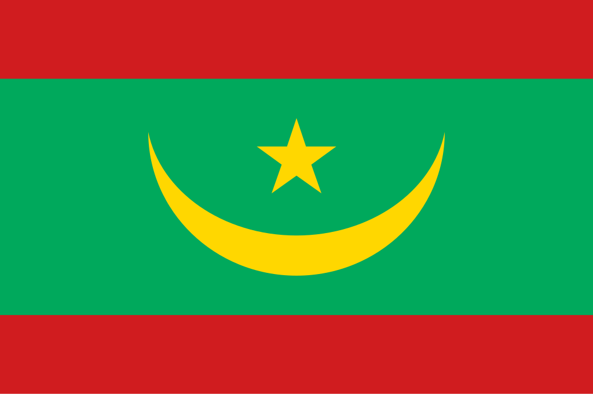

Mauritânia
 A Mauritânia, oficialmente República Islâmica da Mauritânia, é um país localizado na África Ocidental, fazendo fronteira com o Saara Ocidental, Argélia, Mali e Senegal, com litoral no Oceano Atlântico. Com uma área de aproximadamente 1,03 milhão de km², grande parte do território é dominada pelo deserto do Saara. A capital e maior cidade é Nouakchott, situada na costa atlântica. A população mauritana é formada majoritariamente por árabes-bérberes (conhecidos como "mouros") e grupos africanos subsaarianos, refletindo uma história de migrações e interações culturais. A economia é baseada principalmente em mineração, pesca, agricultura e pecuária, sendo membro da União Africana, da Liga Árabe e da ONU. O país possui uma forte herança islâmica, que influencia intensamente a política, a sociedade e a cultura local.
História
A história da Mauritânia é marcada por povos nômades do deserto e pela presença de civilizações antigas no Sahel. Durante séculos, tribos berberes e árabes dominaram a região, integrando rotas comerciais transaarianas que ligavam África Ocidental ao Norte da África. A partir do século XV, comerciantes europeus, principalmente portugueses, visitaram a costa atlântica, embora a colonização efetiva tenha ocorrido apenas no século XIX, quando os franceses estabeleceram o controle sobre o território, incorporando-o à África Ocidental Francesa. Durante o período colonial, a economia local foi reorganizada em torno da agricultura, pecuária e exploração de recursos naturais.
A independência foi conquistada em 1960, com Moktar Ould Daddah como primeiro presidente. Desde então, a Mauritânia passou por períodos de instabilidade política, incluindo golpes de estado, mas tem mantido esforços para consolidar instituições democráticas. A história recente reflete desafios sociais e econômicos, mas também a busca por integração regional e desenvolvimento sustentável.
Cultura
A cultura mauritana é fortemente influenciada pelo Islã e pela herança árabe-berbere, convivendo com tradições africanas do sul do país. A música tradicional, como o "griot", narra histórias e transmite conhecimentos ancestrais, sendo acompanhada de instrumentos como o tidinit e o ardin. A literatura oral desempenha papel central, preservando mitos, genealogias e ensinamentos morais. A gastronomia é baseada em cuscuz, arroz, peixe, cordeiro, feijão e leguminosas, temperados com especiarias locais. Festividades religiosas como o Ramadã, Eid al-Fitr e Eid al-Adha são momentos de intensa celebração comunitária.
As línguas oficiais são o árabe e o francês, mas o hassanía (dialeto árabe local) é amplamente falado, juntamente com línguas africanas como o pulaar, soninké e wolof. A arquitetura combina influências islâmicas, africanas e coloniais francesas, refletindo a diversidade histórica e cultural do país.


Clima
A Mauritânia apresenta clima predominantemente desértico, quente e seco, com temperaturas elevadas durante o dia e noites relativamente frias. As chuvas são escassas e concentradas em um curto período do ano, principalmente no sul do país. O clima árido influencia fortemente a agricultura, a pecuária e o modo de vida das comunidades nômades, tornando a gestão de recursos hídricos um desafio essencial para o desenvolvimento sustentável.
Biodiversidade
A biodiversidade da Mauritânia é adaptada às condições desérticas e semiáridas. No deserto, predominam espécies resistentes à aridez, como camelos, gazelas e répteis, enquanto o sul, próximo ao rio Senegal, abriga aves migratórias, peixes e pequenos mamíferos. A vegetação é composta principalmente por arbustos resistentes à seca, palmeiras e pastagens naturais. Áreas protegidas, como o Parque Nacional do Banc d'Arguin, são essenciais para conservar habitats críticos de aves migratórias e espécies marinhas, sendo referência mundial para conservação ambiental.


Cidades
As cidades da Mauritânia combinam centros administrativos, históricos e econômicos em meio a um território predominantemente desértico. Nouakchott, a capital, concentra governo, comércio e indústria, sendo também o principal porto do país. Nouadhibou é outro centro importante, com destaque para pesca e mineração. Outras cidades significativas incluem Kiffa, Atar e Rosso, cada uma refletindo adaptações ao clima árido e à tradição nômade. As cidades mauritanas são essenciais para o desenvolvimento econômico, social e cultural, funcionando como hubs regionais de comércio, educação e serviços.